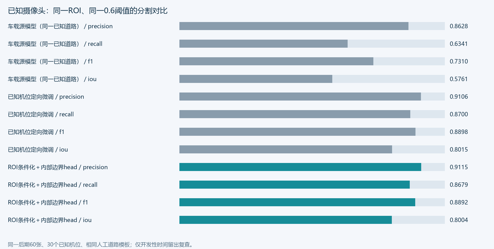
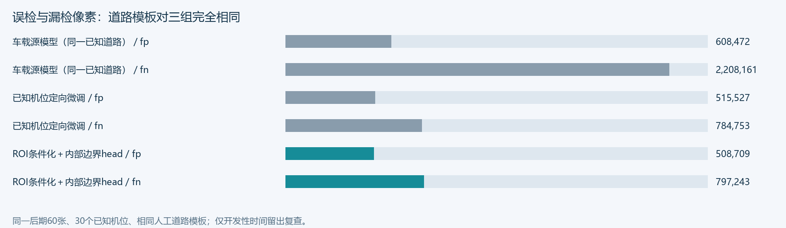
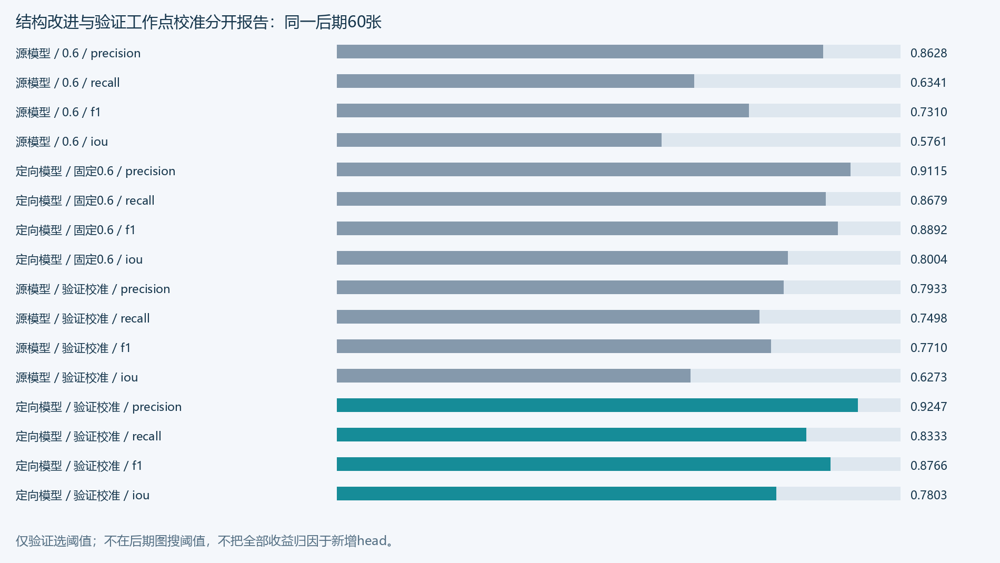
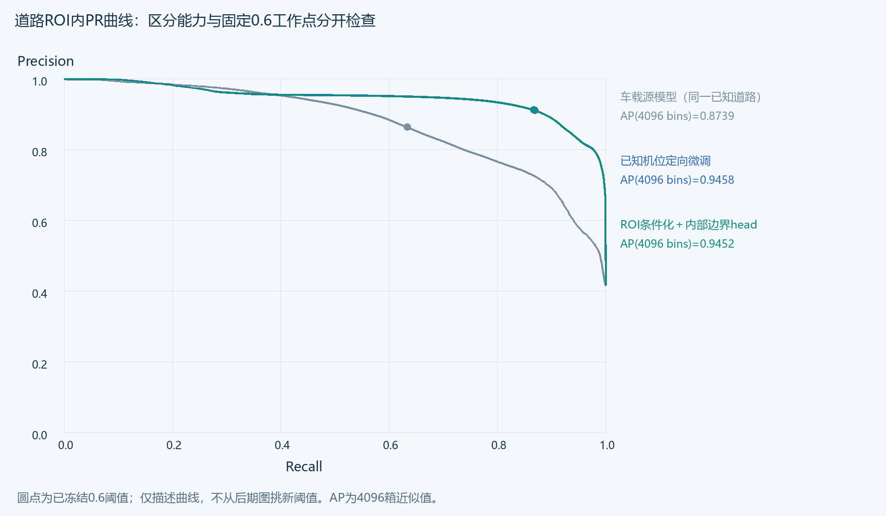

固定阈值0.6
ROI条件迁移模型Precision=0.9115，Recall=0.8679，F1=0.8892，IoU=0.8004。误检508,709像素，漏检797,243像素。
以车载视角的DeepLabV3+预训练模型为基础，利用已知固定摄像头较早时段的人工标注进行定向迁移。每个机位提供一份道路区域模板，模型识别图像中的冰雪，并将分割结果限制在目标道路内。
在固定摄像头道路范围明确的条件下，评价迁移模型的道路内冰雪分割能力，统计Precision、Recall、F1、IoU、误检/漏检像素数和实际运行耗时，并通过原图、人工真值和预测三联图检查结果。
180张训练图用于更新模型权重，60张验证图用于选取权重和校准阈值，另60张后期图用于计算页面展示的评价指标与三联图。训练和验证图已参与模型开发，不能合并进后期评价分母。“5种方案 × 60张 = 300组预测”指方法—图像组合数，与数据集共有300张是两件事。
| 配置项 | 实际配置与作用 |
|---|---|
| 数据来源 | Fintraffic / Digitraffic固定道路摄像头快照，30个物理机位，每机位10张，共300张。 |
| 划分单位 | 在每个机位内按API/HTTP登记时间排序，依次6张训练、2张验证、2张后期评价。三个集合均包含同一30个已知机位。 |
| 评价目标 | 已知机位定向适配后的道路内冰雪分割。摄像头在训练、验证、评价阶段共享，不能解释为新机位泛化测试。 |
| 原始分辨率 | 280张1280×720、20张704×576；同一机位内部尺寸一致，模型输入统一512×512。 |
| 时间信息 | 约22小时范围的稀疏快照，登记时间与HTTP Last-Modified一致，但不是独立快门时间证明，也不是连续视频。 |
| 数据与GT有效性 | 300张具有有效GT记录，无完全重复源文件SHA256。原始图像、人工JSON和GT只读保留。 |
| 道路标注 | 每机位一份人工道路模板，同机位同视角图像复用，在训练和推理阶段保持一致，不计算“自动道路识别成功率”。 |
| 冰雪标注 | 逐图使用人工ice标注；无ice标注的相应图像已由用户确认目标道路内无冰雪，作为负样本保留。 |
原始冰雪标注允许存在道路外区域，但不计入道路内冰雪评价。网页中间一栏展示S与R的交集，不裁剪或覆盖源GT。各方法在同一评价图上使用同一份R，避免道路范围变化干扰冰雪模型比较。人工模板限制下的路外预测为0属于几何约束，不代表模型自动找到了道路。
流程先依据摄像头编号读取固定人工道路模板，再执行道路区域输入处理和冰雪分割，最后将输出限制到目标道路。源模型提供通用分割特征，目标机位较早时段标注用于适配道路表面外观。
| 方法 / 配置 | 具体设置 |
|---|---|
| 基础网络 | DeepLabV3+，ResNet34编码器，单通道冰雪概率输出，车载源预训练权重初始化。 |
| 冻结与适配层 | 冻结stem、layer1—3以及全部BN运行统计；训练layer4、decoder与冰雪分割输出层。前2轮冻结layer4预热。 |
| 道路ROI条件分支 | 将256通道解码特征与1通道ROI拼接，经Conv3×3(257→64)、GroupNorm和ReLU，输出零初始化冰雪logit残差。 |
| 内部边界监督 | 辅助预测道路内部冰雪/裸路边界，排除人工道路多边形外缘。边界损失权重0.1，训练集派生正权重上限20。 |
| 输入处理 | RGB和道路模板统一512×512，ROI用最近邻缩放；ROI外填ImageNet均值×255并转uint8，之后归一化。 |
| 归一化 | mean=[0.485, 0.456, 0.406]，std=[0.229, 0.224, 0.225]，与源模型保持一致。 |
| 损失函数 | 道路有效区域BCE(pos_weight=2)+0.5×正例Dice，叠加内部边界辅助项。负例参与BCE监督。 |
| 优化设置 | AdamW，weight decay=1e−4；layer4 LR=3e−6，decoder/ice LR=3e−5，条件分支LR=1e−4。 |
| 批量与轮数 | batch=2、梯度累积2次，有效batch=4；seed=42。上限35轮，patience=8、至少12轮；实际训练19轮，验证选择第11轮。 |
| 数据增强 | 水平翻转概率0.5；亮度/对比度概率0.3、范围±0.12；gamma概率0.25、范围0.8—1.2，随后固定ROI外均值填充。 |
| 输出恢复 | 模型网格上按冻结阈值二值化，再最近邻恢复原图尺寸，与同机位原尺寸道路模板相交，保存单通道0/255 PNG。 |
模型权重只根据60张验证图选择，不用后期评价图更新。固定0.6的选模规则先检查验证FP/FN共同下降，再按预设指标选取；未满足共同条件时使用登记的回退规则，并保留未达标记录。0.7配置在冻结权重后由验证集单独校准，所有机位共用同一个阈值。
比较中保留冻结车载源模型和普通定向微调作为对照，各组道路模板、分辨率和归一化一致。“ROI条件迁移模型”表示含道路ROI条件分支及内部边界监督的固定模型配置。
全部结果使用同一60张图像、同一人工道路模板和同一GT口径。固定0.6用于同阈值比较；源模型0.1与迁移模型0.7是验证集各自选定的全局工作点，单独列示。
| 方案 | 阈值 | Precision | Recall | F1 | 微IoU | FP像素 | FN像素 |
|---|
分母：60张后期评价图，30个机位。全部5种方案共300组图像—方法配对，保存掩码复算TP/FP/FN/TN与源CSV一致。


ROI条件迁移模型Precision=0.9115，Recall=0.8679，F1=0.8892，IoU=0.8004。误检508,709像素，漏检797,243像素。
同一模型Precision=0.9247，Recall=0.8333，F1=0.8766，IoU=0.7803。误检409,794像素，漏检1,006,203像素。该工作点减少误检，同时降低冰雪召回。

候选阈值为0.1、0.2、0.3、0.4、0.5、0.6、0.65、0.7、0.75、0.8、0.85、0.9。目标模型按验证约束选择0.7，源模型校准对照选择0.1；没有按每机位单独调阈值。

以30个物理机位为配对重采样单位，每次完整带入该机位2张后期图像，bootstrap共2,000次、seed=20261121。表内为相对同条件冻结源模型0.6的差值；同机位图像和像素不作为独立统计样本。
固定0.6下F1差+0.158144，95%CI [0.087879, 0.241762]；IoU差+0.224376，95%CI [0.134080, 0.315495]。正GT机位平均IoU为0.6987，对应源模型为0.4934。
FP/FN共同降低另使用两条97.5%区间进行Bonferroni联合检查。0.6的FP普通95%CI跨0；0.7的FP/FN普通95%CI均低于0，但FP的97.5%区间上界约为+3,907像素。因此可报告点估计和F1/IoU区间，不声称联合意义下稳定同时消除两类误差。
数据总量为300张，这里只浏览未用于该次训练和选模的60张后期评价图。默认显示验证校准0.7配置，也可切换0.6和各对照方案。绿色表示冰雪，黄色表示同一人工道路边界；误差图红色为FP、蓝色为FN。道路外冰雪不计入道路内结果。
最多显示12个均匀名次缩略图，全部60张评价图和5种方案均可浏览。图片按需加载，不以base64嵌入大文件。
按每个机位2张后期图汇总当前所选方案。空GT/空预测得分为NA，负例主要查看FP。误差图保留人工参考和原预测，不因视觉争议改写GT。
FIN_C0858801_20261118T091104Z的人工道路内含冰雪标注，而校准配置未覆盖相应区域，IoU为0。该例保留为漏检案例。
固定0.6的ROI条件迁移模型在25张负例中，有3张出现非零FP，共47,733个误检像素。负例不以空并集IoU记满分。
固定模板约束道路内结果。相机位置、裁切、缩放或有效道路范围改变时，模板可能不再适用；该流程没有自动验证相机姿态漂移。
查看道路ROI口径以下从既有prediction_manifest.csv的inference_seconds逐条汇总，不重新运行模型。输入为单张512×512，执行CUDA推理。为保留真实波动，60条记录全部纳入，首张不删除。
模型前向计算、sigmoid概率转换、输出概率回传CPU，以及CUDA同步等待。平均值和分位数均来自同一60张的现有运行记录。
模型加载、源图与模板读取、图像缩放/归一化、输入上传GPU、二值化和原尺寸恢复、道路相交、PNG/NPZ与覆盖图保存。完整端到端单张耗时未单独记录。
0.7与源模型0.1校准直接复用已保存概率，没有新增模型前向；相应manifest中的时间沿用原推理记录，不能当作两次独立测速。运行使用共享GPU，未登记独立预热协议，源模型首张耗时明显较高，因此这些日志只说明处理耗时量级，不用于宣称各模型之间的速度优劣或实时吞吐。
训练计时从模型/数据准备和优化器初始化之后开始，包含训练循环、逐轮验证与检查点写入，不等于整个工程启动到交付的总墙钟时间。GPU具体型号未在该运行证据中固定登记。
在30个已知固定摄像头、共享人工道路模板的条件下，定向迁移模型完成道路内冰雪识别。固定0.6配置在60张后期评价图上得到Precision=0.9115、Recall=0.8679、F1=0.8892、IoU=0.8004；日志中的模型计时段均值为16.49 ms/张。0.7配置提供少误检工作点，Precision为0.9247，同时Recall下降至0.8333。
适用前提是摄像头编号、视角、尺寸与道路模板匹配。数据是约22小时的已查看快照：10个机位早期/后期均无雪，19个机位早期/后期均曾有雪，1个早期有雪后期无雪，早期无雪而后期出现雪的机位为0。现有结果限于该探索性时间留出评价。
该评价覆盖道路内冰雪分割与已记录计算时间，不包含自动道路定位精度、完整端到端时延、连续视频时序性能或C/NPI及风险等级准确率。
网页只读既有结果，不运行模型。公开内容包括60张评价照片、道路内GT/预测/误差可视化、报告图表与指标CSV。图层是展示用覆盖图，不是原始标注JSON或原始GT/ROI二值文件。
网站不包含模型权重、LabelMe JSON、原始GT/ROI二值文件、原始二值预测文件或私有完整压缩包。以下仅为配置校验指纹，不包含模型本体。
全部数据与指标来自既有报告；本次仅更换展示和托管方式，没有训练、推理、阈值调优或修改原始GT。所有照片均已查看，结论限于已知固定机位的探索性时间留出评价。
图像来源：Fintraffic / digitraffic.fi，原清单登记CC BY 4.0。公开展示副本；图片时间为UTC，报告整理时区为Asia/Shanghai。许可说明